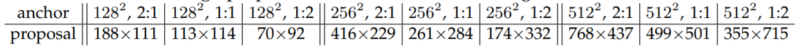

Faster R-CNN在Fast R-CNN的基础上做改进，提出用RPN（Region Proposal Network, 一种全卷积神经网络）代替Selective Search，降低检测耗时。Faster R-CNN由RPN和Fast R-CNN构成，RPN和Fast R-CNN共享卷积计算得到的特征图，以此降低计算量，使得Faster R-CNN可以在单GPU上以5fps的速度运行，且精度达到SOTA。
术语缩写
| 缩写 | 全称 |
|---|---|
| R-CNN | Region Convolution Neural Network |
| RPN | Region Proposal Network |
| FCN | Fully Convolutional Network |
| SS | Selective Search |
| ZF | Zeiler and Fergus model |
| IoU | Intersection-over-Union |
| RoI | Region of Interest |
Faster R-CNN
Faster R-CNN is a single, unified network for object detection. The RPN module serves as the ‘attention’ of the unified network.
Faster R-CNN 由以下两个部分组成:
- Deep fully convolutional network that proposes regions
- Fast R-CNN detector that uses the proposed regions
Region Proposal Network
Region Proposal Network
A Region Proposal Network (RPN) takes an image (of any size) as input and outputs a set of rectangular object proposals, each with an objectness score.
The authors model this process with a fully convolutional network.
To generate region proposals, the authors slide a small network($n \times n$ spatial window, $n=3$) over the convolutional feature map output by the last shared convolution layer.
Each sliding window is mapped to a lower-dimensional feature (256-d for ZF and 512-d for VGG, with ReLU following).
This feature is fed into two sibling fully-connected layers – a box-regression layer ($reg$) and a box-classification layer ($cls$). This architecture is naturally implemented with and $n \times n$ convolutional layer followed by two sibling $1 \times 1$ convolutional layers (for $reg$ and $cls$ respectively).
Anchor
the number of maximum possible proposals for each location is denoted as $k$.
- $reg$ layer has $4k$ outputs $(x, y, w, h)$ encoding the coordinates of $k$ boxes
- $cls$ layer has $2k$ outputs scores that estimate probability of object or not object for each proposal. (implemented as a two-class softmax layer)
The $k$ proposals are parameterized relative to $k$ reference boxes, which we call anchors.
- An anchor is centered at the sliding window in question, and is associated with a scale and aspect ratio (宽高比).
- For a convolutional feature map of a size $W \times H $ , there are $WHk$ anchors in total.
use 3 scales with box areas of $128^2$, $256^2$, $512^2$ pixels, and 3 aspect ratios of 1:1, 1:2, 2:1.

Multi-Scale Anchors as Regression Reference
Different schemes for addressing multiple scales and sizes.
作者采取b)和c)变化窗口形状和大小的方法，而不使用a)变换图片大小的方法。
Lost Function
Positive anchor:
- the anchor/anchors with the highest Intersection-over-Union(IoU) overlap with a ground-truth box (作者采用).
- an anchor that has an IoU overlap > 0.7 with any grouth-truth box (作者不采用).
Negative anchor:
- non-positive anchor if its IoU < 0.3 for all grouth-truth boxes.
lost function for an image
$$ L(\{p_i\}, \{t_i\}) = \frac1{N_{cls}} \sum_i{L_{cls}} (p_i, p_i^*) + \lambda \frac{1}{N_{reg}} \sum_i {L_{reg}(t_i, t_i^*)} $$
- $L_{cls}$ is log loss over two classes (object $vs.$ not object)
- $L_{reg}(t_i, t_i^*) = R(t_i - t_i^*)$ where $R$ is the robust loss function (smooth $L_1$)
- $N_{cls}$ is the mini-batch size (i.e., $N_{cls}=256$)
- $N_{reg}$ is the number of anchor locations (i.e., $N_{reg} \approx 2400$)
- $\lambda = 10$ and thus both $cls$ and $reg$ terms are roughly equally weighted.
$$
\begin{align}
&t_x = (x-x_a)/w_a, & t_y = (y-y_a)/h_a, \\
&t_w = \log(w/w_a), & t_h = log(h/h_a), \\
&t^*_x = (x-x^*_a)/w_a, & t^*_y = (y^*-y_a)/h_a, \\
&t^*_w = \log(w^*/w_a), & t^*_h = log(h^*/h_a), \\
\end{align}
$$
Training RPNs
The RPN can be trained end-to-end by back-propagation and stochastic gradient descent (SGD).
- 一张图片包含多个正样本和负样本(正样本少于负样本)
- 随机采样256个样本用于计算loss of a mini-batch
- 初始化: Gaussian distribution (mean=0, standard deviation=0.01)
- momentum: 0.9, weight decay: 0.0005
Sharing Features for RPN and Fast R-CNN
4 - Step Alternating Training
- Train the RPN as described previously.
- Train a separated detection network (ImageNet-pre-trained) by Fast R-CNN using the proposals generated by step-1 RPN.
- Use the detector network to initialize RPN training, but fix the shared convolutional layers and only fine-tune the layers unique to RPN.
- keeping the shared convolutional layers fixed, fine-tune the unique layers of Fast R-CNN.